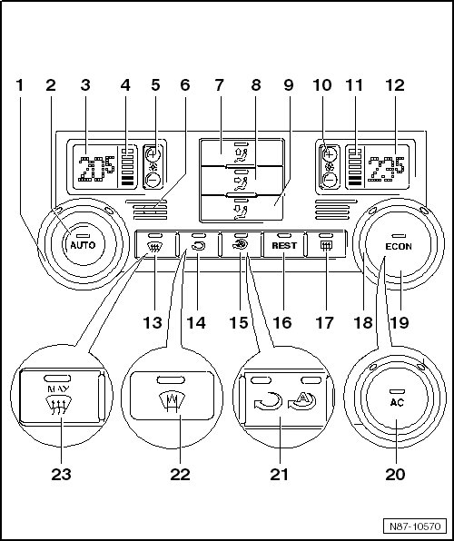

2 Zone A/C Display Control Head with Climatronic Control Module
2 Zone A/C Display Control Head with Climatronic Control Module

1 Temperature regulator, left
• Changed temperature setting on left side by turning.
2 AUTO button
• In automatic mode the Climatronic maintains the selected interior temperature automatically. With this setting the vent air temperature, the blower speed and the air distribution are controlled automatically.
3 Display for selected interior temperature, left
• Can be changed from degrees Celsius to degrees Fahrenheit and vice versa --> [ Convert degrees Celsius to Fahrenheit in vehicles
with menu control elements in windshield washer lever. ] 4 Zone A/C Display Control Head with Climatronic Control Module
4 Display for blower speed, left
• In automatic operation the actual blower speed is displayed.
5 Button for setting blower speed, left
6 Instrument Panel Interior Temperature Sensor (G56)
• cannot be replaced separately
7 Button - upper air distribution
8 Button - center air distribution
9 Button - lower air distribution
10 Button for setting blower speed, right
11 Display for blower speed, right
• In automatic operation the actual blower speed is displayed.
12 Display for selected interior temperature, right
• Can be changed from degrees Celsius to degrees Fahrenheit and vice versa --> [ Convert degrees Celsius to Fahrenheit in vehicles
with menu control elements in windshield washer lever. ] 4 Zone A/C Display Control Head with Climatronic Control Module
13 Defrost button
14 Button for air recirculation
• Press button for recirculating air function to prevent polluted air from entering interior.
15 Button for automatic recirculating air
• Press button for automatic recirculating air function to prevent polluted air from entering interior.
• Recirculating air is switched on automatically under the following conditions:
• When the windshield washer system is operated.
• When Sensor For Air Quality (G238) is activated.
• When engaging the reverse gear this function is only active for 2 minutes after starting the engine
• Blower speeds on A/C Control Head (E87).
• A/C Control Head (E87) "OFF"
16 REST button
• When residual heat function is switched on the residual heat of engine is pumped by a coolant pump to the heat exchanger.
17 Button for rear window heating
18 Temperature regulator, right
• Changed temperature setting on right side by turning.
19 ECON button
• Press button to switch air conditioning on and off.
• In "ECON" mode, the A/C compressor is set to minimum output and the heater and air distribution continue to be controlled automatically.
20 AC button
• If the AC button is deactivated, the compressor is set to almost no delivery. If the AUTO button is activated, the heating and ventilation mode will be controlled electronically.
21 Air recirculation/automatic air recirculation button
• pressing the button switches the air recirculation on and prevents uncleaned air from the outside from getting into the passenger compartment; pressing the button again switches on the automatic air recirculation, which prevents polluted air from getting into the passenger compartment
• the setting is recognizable on the LED above the symbols
22 Windshield defroster button
23 Button for defrosting windshield
• identified with "MAX"